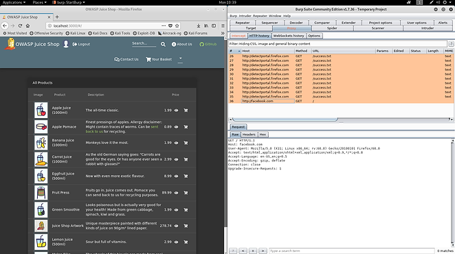
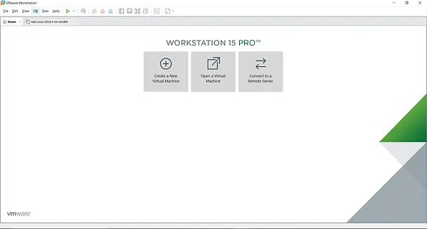
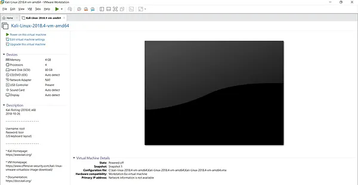
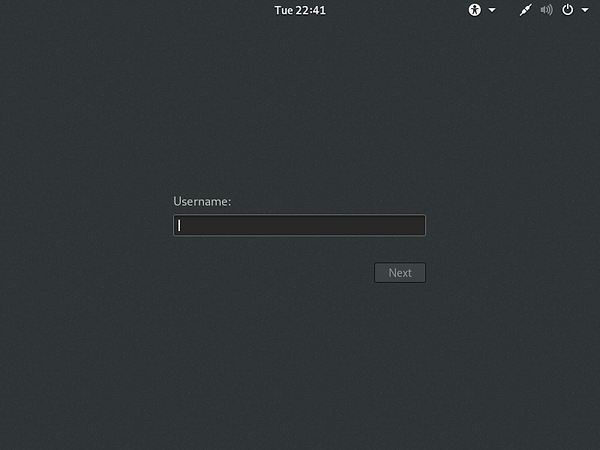
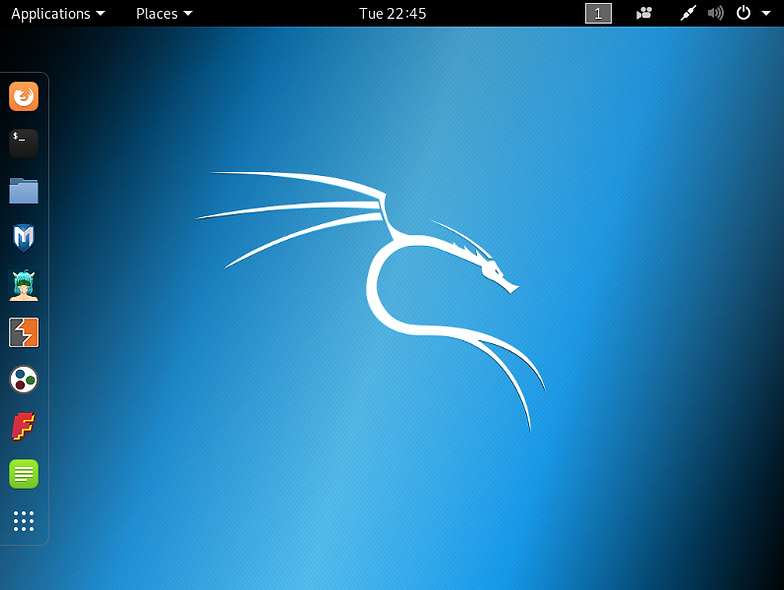
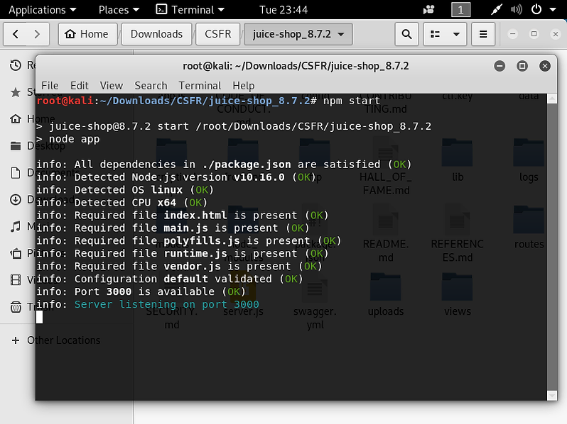
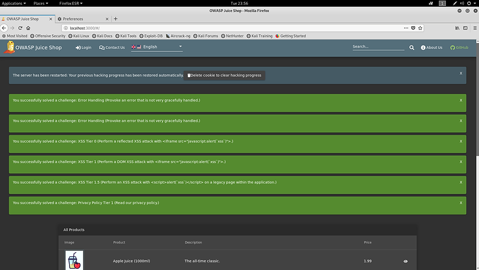
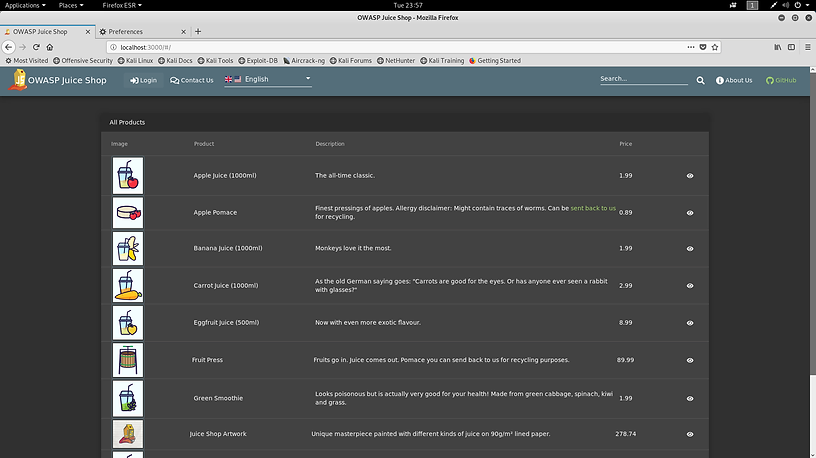

Part 2 - Tools needed to perform CSRF
What are the tools we need?:
- - Burp-Suite
- - OWASP
- - Kali Linux
What is BurpSuite?
Software tool used for security testing and scanning on the web application. It helps to distinguish vulnerabilities and check attack vectors are affecting web applications.

Installation of BurpSuite
- Kali linux
- - Kali Linux has a pre-installed burp suite, so you do not need to install it again
-Windows
- - Installation Link: https://portswigger.net/burp
- - Download and install the community version
In this tutorial, we will be running it on Kali Linux. Recommended OS will be kali linux.
Installation of kali Linux
A Debian derived Linux operating system used for ethical hacking. It contains open-sourced hacking tools that can be used for penetration testing. Well-known tools such as Metasploit, nmap, aircrack-ng and etc. can be found on the system. Users often use Kali Linux as their platform to find the company's vulnerabilities
Kali Linux LinkOpen up VMWare Workstation and click on open a virtual machine (The file that you downloaded is a VMware image, therefore there isn't a need to a new virtual machine

Click on "Power on this virtual machine"

Username: root
Username: toor

You now have Kali Linux on your VMware! Let's start right into hacking in the next section

What is OWASP?
OWASP stands for Open Web Application Security Project OWASP is an insecure web application.It is a platform where users can set up the environment to perform attacks on the website. Help to educate developers and everyone who is using the internet about what are the risks associated with the current common web application vulnerabilities
Installation of OWASP
In this tutorial, we will be using the OWASP juice shop as our platform to perform CSRF.
- Open up the folder located at ~/Downloads/CSFR/juice-shop_8.7.2/
- Open up terminal and type "npm start" to start up the node application

Open Firefox and on the URL enter "localhost:3000"
Click "delete cookie to clear hacking progress" and reload the page

